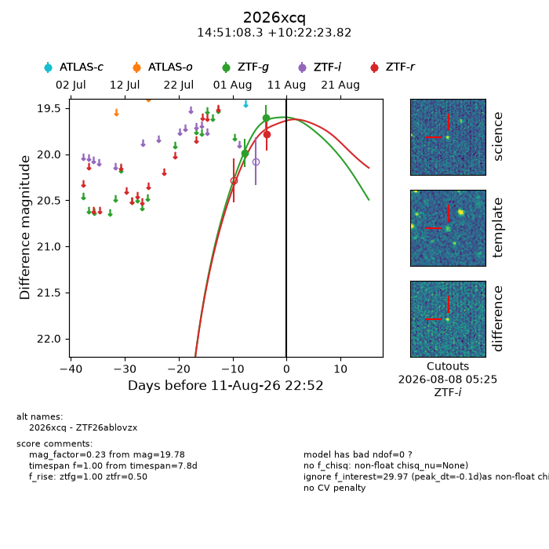
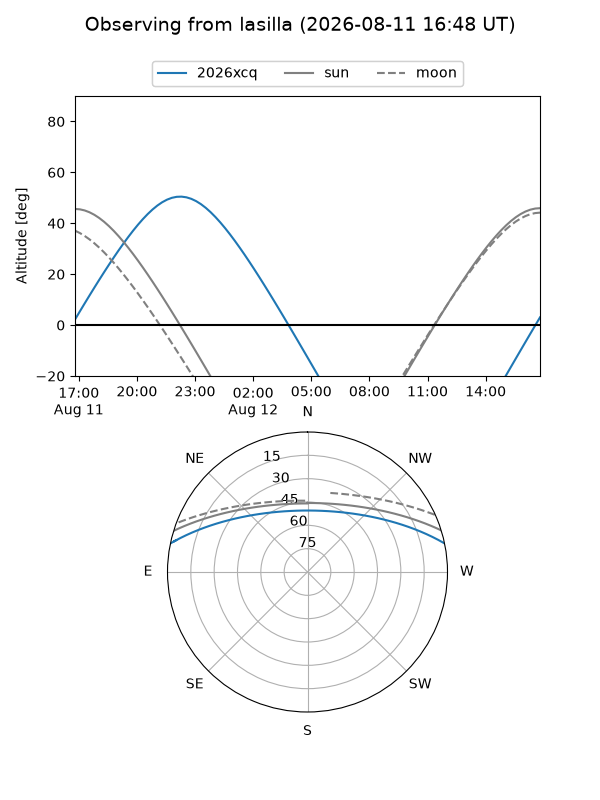
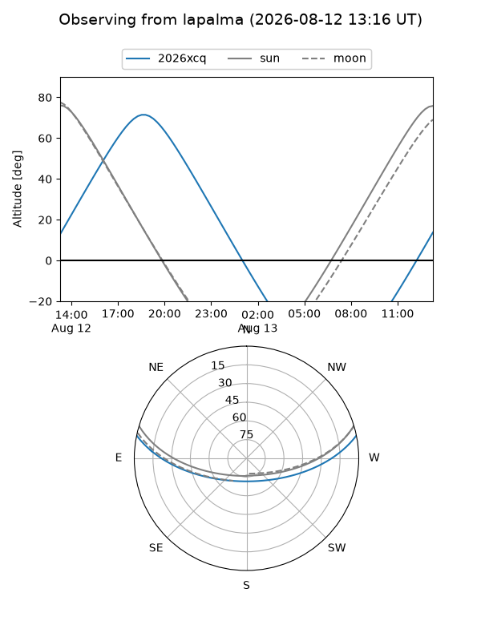
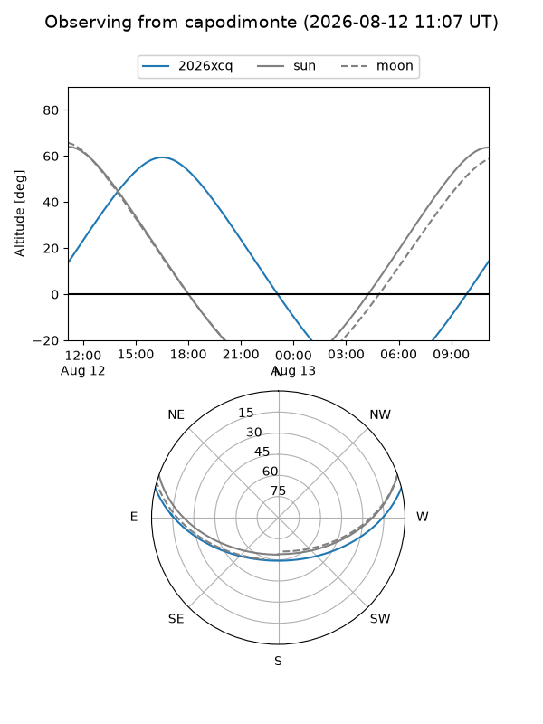
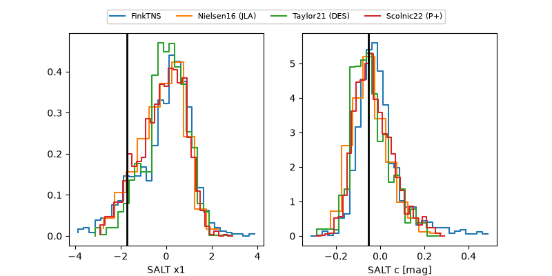

2026xcq
Target 2026xcq at 2026-08-12 10:42
Aliases and brokers:
FINK-ZTF: ztf.fink-portal.org/ZTF26ablovzx
Lasair-ZTF: lasair-ztf.lsst.ac.uk/objects/ZTF26ablovzx
ALeRCE-ZTF: alerce.online/object/ZTF26ablovzx
YSE-PZ: ziggy.ucolick.org/yse/transient_detail/2026xcq
TNS name: wis-tns.org/object/2026xcq
Direct TNS query: direct search
alt names
ZTF26ablovzx (ztf,fink_ztf)
2026xcq (tns,yse)
Coordinates:
equatorial (ra, dec) = 222.7845,+10.37328
equatorial (HMS+DMS) = 14:51:08.29,+10:22:23.82
galactic (l, b) = (7.9648,+57.22802)
Flags:
TNS type: nan
peak dt: +0.4
Photometry:
last ztfg=19.60, ztfr=19.78
2 ztfg, 1 ztfr detections
Lightcurve

Visibility



Additional plots
